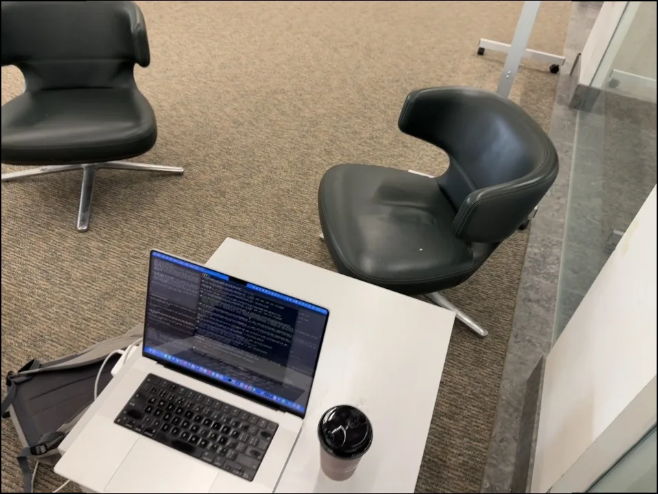
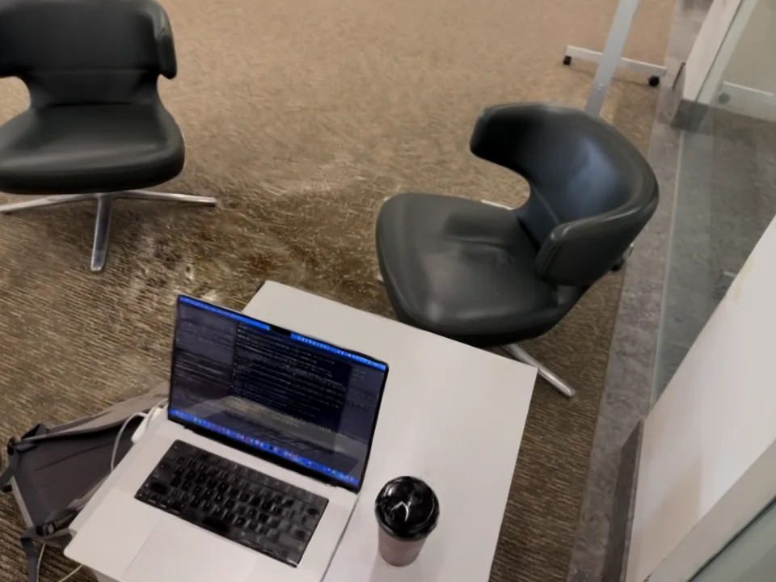
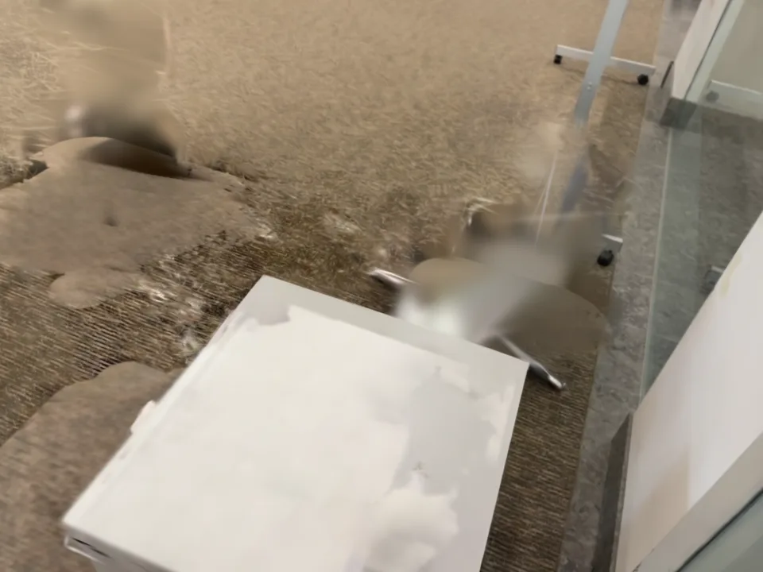

Scene 02 · Trained Gaussian splat → MuJoCo · October 2026
The room,
as a simulator.
One 15.7-second phone video. A trained 3D Gaussian room with the objects removed, and each object rebuilt as its own movable body: a laptop with a working hinge, two swivel chairs, a coffee cup and a backpack.
Loading 0.73 million Gaussians (about 12 MB)…
Click an object to select it
Drag an object to move it; Shift + drag lifts it. Select the laptop or a chair, then drag the orange handle to open the lid or swivel the seat. Drag the background to orbit, scroll to zoom. R restores the selected pose.
The room and the objects are Gaussian splats rendered in the browser with Spark: the cleaned room, plus each object's own Gaussians attached to its MuJoCo body frame and fine-tuned in that frame against the training photos. Gaussians only look right from directions the video saw them from, so when you look at a part from a side the capture never covered (a seat swivelled round, a lid tilted down) the viewer swaps that part to its textured simulation mesh instead of letting the splat smear. The chair bases were barely observed and always use their meshes. “Simulation meshes” adds the meshes under every object; they are fitted or generated, so they are less accurate than the splats. Splats farther than 1.5–2 cm from the fitted laptop and cup shapes are trimmed as floaters. Dragging here is a kinematic preview. Contact, gravity and joint friction run in MuJoCo (video below). Spherical harmonics are reduced to the base colour for download size; the decoded files match the full-precision base-colour render at 39–47 dB PSNR.
MuJoCo
Same scene.
Real contact.
The MJCF loads directly in MuJoCo. A small Python wrapper renders it photoreal: each link's Gaussians move with the body, the clean room is drawn in the same pass, and a robot added to the scene is composited on top with correct occlusion.

| Body | Joints | Collision | Assumed mass |
|---|---|---|---|
| Laptop (base + lid) | Free · lid hinge, captured 108.5° open, range −108.5°…+26.5°, friction-held | 2 boxes from the AgentSTAR rig (below) | 1.45 + 0.69 kg |
| Swivel chairs ×2 (base + seat) | Free · unlimited swivel with friction | Base cylinders + 10 convex pieces for the seat | 7 + 9 kg |
| Coffee cup | Free · rolling resistance | Revolved cup + lid profile fitted to 75 silhouettes | 0.25 kg |
| Backpack | Free (rigid) | 8 convex pieces | 1.2 kg |
| Pedestal | Fixed | Box 0.74 × 0.73 × 0.70 m, footprint and 1.2° yaw fitted to 79 silhouettes | – |
Masses and friction are assumptions, not measurements. Physics validation passed: objects settle within 3.2 mm, starting penetration is under 0.04 mm, every lifted object lands back at rest, the hinge and swivels reach their full ranges, no instabilities, 102× real time on one CPU core. The laptop's front overhangs the pedestal edge by about 8 cm, as in the video, and stays put. The photoreal render takes about 55 ms per 960 × 720 frame on an RTX 5080 shared with another training job.
Agentic shape tracking
The laptop,
rebuilt by an agent.
AgentSTAR (Mazur et al., Amazon FAR, 2026) has a coding agent write a Blender script that builds the object from primitives, declares its joints, renders it in front of the known cameras and iterates against the frames. We ran its harness on 24 frames of this video with Claude Code as the agent, using our COLMAP cameras and SAM 2 masks, and replaced the simulator's laptop with the result.

| Laptop, same 24 frames and masks | Silhouette IoU (22 frames with correct masks) |
|---|---|
| Previous simulator laptop: boxes fitted to Gaussian centres | 0.894 mean · 0.871 worst |
| AgentSTAR rig, free pose | 0.981 mean · 0.961 worst · 18 of 24 frames above the 0.98 gate |
| AgentSTAR rig resting level on the pedestal (used in the simulator) | 0.966 mean · 0.944 worst |
The harness's own search verbs score one frame at a time and cannot change scale. Because the laptop never moves, we added a shared fit of scale, pose, lid angle and part dimensions across all frames. A free fit left the base tilted 4.3° and sank one corner 2 cm into the table, which a simulator would knock flat in the first steps, so the rig used here is constrained to rest level on the pedestal. All of the harness's gates passed: temporal review, watertight parts and self-intersection. Two frames are excluded because their masks miss the silver palm rest. The remaining misses are mask edges and the charging plug. Turntable ↗ Rig + poses ↗

Whole-scene evaluation
Scored against
the video.
29 held-out frames (every 8th, never used for training). Geometry: MuJoCo segmentation of the simulator's meshes, depth-ordered, against the SAM 2 masks. Appearance: the photoreal simulator render against the photo, and the original full-scene splat as the reference.
| Silhouette IoU | Before this round | Now | What changed |
|---|---|---|---|
| Laptop | 0.891 | 0.961 | AgentSTAR rig |
| Coffee cup | 0.755 | 0.881 | Profile refit to silhouettes (the old one was 2.5 cm too thin at the base) |
| Pedestal | 0.792 | 0.876 | Box footprint refit (it sat 5.6 cm off) |
| Chair (left) | 0.796 | 0.840 | Position, yaw, swivel and base yaw refit |
| Chair (right) | 0.659 | 0.678 | Rigid refit only: the generated chair does not match its shape well |
| Backpack | 0.824 | 0.814 | Refit; better in 15 of 20 shared views (one near-out-of-frame view now counted) |
| Appearance, held-out | Simulator before | Simulator now | Full-scene splat |
|---|---|---|---|
| PSNR inside object masks | 18.6 dB | 21.5 dB | 21.4 dB |
| SSIM inside object masks | 0.760 | 0.808 | 0.812 |
| PSNR, full frame | 20.3 dB | 21.9 dB | 20.1 dB |
Cutting each object's Gaussians out of the full splat dropped appearance that leaned on mislabelled neighbours. A short fine-tune of each link's Gaussians in its MuJoCo body frame closes that gap: they are composed with the frozen clean room at the captured state and trained on the training photos. Two variants were rejected after rendering moved objects. Training without constraints scored 22.2 dB but painted the wall behind the lid and the removed cable onto the backpack. Training colour only reached 19.9 dB. The kept version keeps geometry anchored within 1 cm and stops links painting outside their own masks. Nine verified SAM 2 label errors are excluded from the IoU, for example the backpack label sitting on the cable when the backpack is out of view. Evaluation ↗ Before ↗ Fine-tune ↗ Label errors ↗
Move the object, keep the room
A background
without the objects.
The room splat is trained from scratch with every object pixel masked out. Gaussians mostly supported inside object masks are pruned. Object footprints and contact shadows are then filled in top-down texture maps of the floor and pedestal top, so the fill looks the same from every viewpoint.







Held-out frames, rendered without per-frame exposure correction. The inpainted floor patches are visible as flatter, blurrier carpet, and a faint haze remains near the glass where the right chair stood. The white charger on the pedestal side is part of the fixed room. Per-view LaMa and Stable Diffusion 2 inpainting were tried first and rejected: they smeared large holes or invented new objects.
Methods, compared on this capture
Try each method.
Keep the best.
| Stage | Used | Compared / measured |
|---|---|---|
| Camera tracking | COLMAP incremental SfM, 236 / 236 frames, 0.44 px reprojection error | Depth Anything 3 feed-forward poses differ by 4.8 cm RMSE and 4.3° median rotation over a 7.1 m path |
| Segmentation | Grounding DINO → SAM 2.1 masks → 3D instance clustering → SAM 2.1 video tracking | Duplicate tracks merged; cable treated as clutter |
| Depth | Depth Anything 3 (giant), aligned per frame to COLMAP points | 0.85 % median relative error to SfM points |
| Appearance | gsplat, MCMC densification, 1.2 M Gaussians, depth loss, per-image exposure | Held-out views: PSNR 22.2 dB, SSIM 0.907 (full scene); clean room 22.6 dB, SSIM 0.902 outside removed regions |
| Object labels | Each Gaussian assigned to the object it contributes most to across all masks | Exact contribution voting through the rasteriser |
| Metric frame | RANSAC floor at z = 0, gravity from its normal, Depth Anything 3 metric scale | Not measured with a tape: see limitations |
Object geometry: three reconstructions per object
A NeuralFeels-style neural signed distance field (Suresh et al., Science Robotics 2024), fitted to segmented depth with free-space carving and smoothness terms; a TSDF fusion baseline; and Hunyuan3D-2mini generated meshes registered by silhouette. Scored on held-out frames: silhouette IoU against SAM 2 masks, and median distance from depth-verified SfM points to the surface.
| Object | Neural SDF IoU / accuracy | TSDF IoU / accuracy | Generated IoU / accuracy | Used in the simulator |
|---|---|---|---|---|
| Laptop | 0.978 / 4.7 mm | 0.922 / 4.5 mm | – | AgentSTAR primitive rig (above) |
| Cup | 0.963 / 6.9 mm | 0.939 / 2.9 mm | – | Revolved profile fitted to silhouettes |
| Backpack | 0.779 / 11 mm | 0.789 / 6.7 mm | 0.730 / 46 mm | Generated (complete, clean) |
| Chair (left) | 0.918 / 16 mm | 0.958 / 8.4 mm | 0.857 / 55 mm | Generated, refit to silhouettes; swivel from cross-sections |
| Chair (right) | 0.822 / 11 mm | 0.784 / 255 mm (fails) | 0.646 / 71 mm | Generated, refit to silhouettes |
| Pedestal | 0.950 / 7.7 mm | 0.976 / 5.4 mm | – | Box, footprint refit to silhouettes |
TSDF is most accurate where surfaces were seen but never closes hidden sides. The neural SDF scores higher on silhouettes, but for the chairs and backpack that is a trap: free-space carving fills unseen regions with blocky slabs and drops the star bases. Generated meshes are clean and closed but 5–7 cm less accurate, so they only supply collision shape and unseen surfaces. Visible appearance comes from the object's own Gaussians wherever the video saw them. One refit that shrank the right chair's legs to a third of their length to gain IoU was rejected.
Limitations
What is measured.
What is not.
Model licences: Depth Anything 3 giant weights are CC BY-NC; Hunyuan3D-2mini uses Tencent's community licence. Back to Rehearse ↗